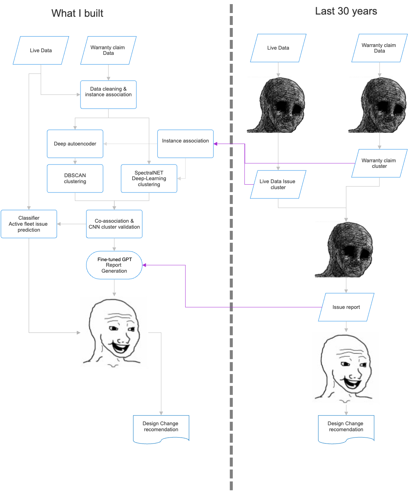

Highlights
Fleet-wide QA Intelligence Platform
- Replaced manual hunts with an end-to-end monitoring stack on Palantir Foundry using Python microservices and real-time Spark streams.
- Ingested & fused 10M+ telemetry messages, DTCs, and warranty notes into a unified event schema.

Emerging Fault Signature Detection
- Auto-clustered patterns with DBSCAN and SpectralNet to surface cross-model issues quickly.
- Design adapts seamlessly to new vehicle models and data distributions.
- Fine-tuned an LLM on 6,000 expert case reviews to draft first-pass QA reports in seconds.
- Adopted by 60 QA engineers; reduced triage time by ≈ 40%.
Systems & Stack
| Platform | Palantir Foundry (pipelines, governance, ops) |
|---|---|
| Streaming | Apache Spark (structured streaming), time-window aggregations |
| Services | Python microservices (ingest, fuse, annotate) |
| ML | DBSCAN, SpectralNet for clustering; supervised models for anomaly scoring |
| LLM | Domain-tuned model for report drafting on curated case corpus |
| Impact | 10M+ events integrated; ≈40% faster fault triage; cross-model issues surfaced within hours |